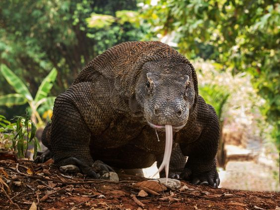
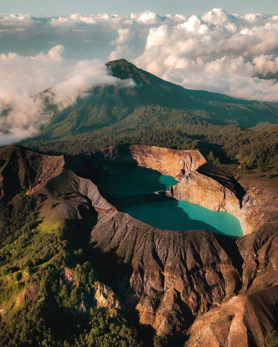
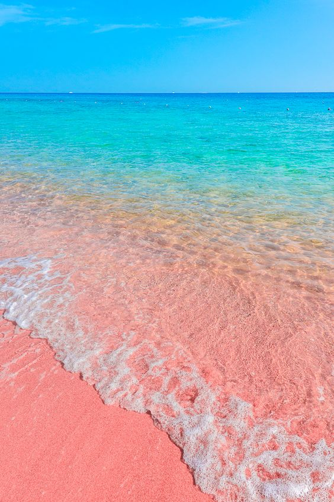

Pulau Komodo

Tempat wisata ini merupakan wisata kebanggaan masyarakat NTT karena telah menjadi salah satu warisan keajaiban dunia versi UNESCO.
Nama pulau Komodo sendiri diambil dari nama hewan sebangsa reptile raksasa yang hidup di kawasan ini, yaitu Komodo. Hewan ini merupakan satu - satunya hewan dari zaman purba yang masih hidup terus hingga saaat ini.
Hewan asli NTT ini memang sanggat menarik perhatian dunia, maka tidak heran jika banyaknya turis asing yang berkunjung karena penasaran dengan hewan purbakala tersebut.
selain itu panorama di pulau komodo ini juga sanggat menawan dan memiliki banyak spot yang dapat memanjakan mata anda.
Lokasinya berada di Kecematan Komodo, Kabupaten Manggarai Barat, Provinsi Nusa Tenggara Timur.
Danau Kelimutu

Objek wisata ini cukup populer dan kawasannya selalu ramai oleh pengunjung, baik domestik maupun mancanegara.
Danau ini cukup unik dan berbeda dari danau lainya karena memiliki tigga macam warna yang berbeda. kombinasi dari tiga warna yang ada di danau ini bukan tanpa alasan,
adanya kandungan belerang serta mineral lain di bawah danau menghasilkan kombinasi warna tersebut.
selain menikmati indahnya danau Kelimutu, lokasinya juga sanggat strategis yakni berada di puncak Gunung Kelimut. Tentu saja untuk bisa sampai ke lokasi danau tersebut kita harus berjalan kaki mendaki gunung.
belum lagi sunset dari tempat ini sungguh menawan menghasilkan siluet yang memberikan pemandangan yang berbeda, Keindahan alam dan danaunya membuat kita betah berlama-lama di tempat ini
Lokasinya berada di pulau Flores, Provinsi NTT.
Pink Beach

Pink Beach adalah tempat wisata favorit. Banyak turis asing yang sengaja datang mengunjung tempat ini karena penasaran dengan fenomena alam yang langka.
Sesuai namanya pantai ini memiliki hamparan pasir berwarna merah muda atau pink yang begitu menawan. Warna pasirnya yang cantik membuat kita semakin asik bermain ataupun berjemuran di atas pasir.
Selain pasir pantainya yang indah, pantai ini juga memiliki hamparan laut biru yang airnya sangat jernih dengan dengan gulungan ombak yang cukup tenang.
Lokasi Pulau Komodo, Manggarai Barat, Provinsi Nusa Tenggara Timur